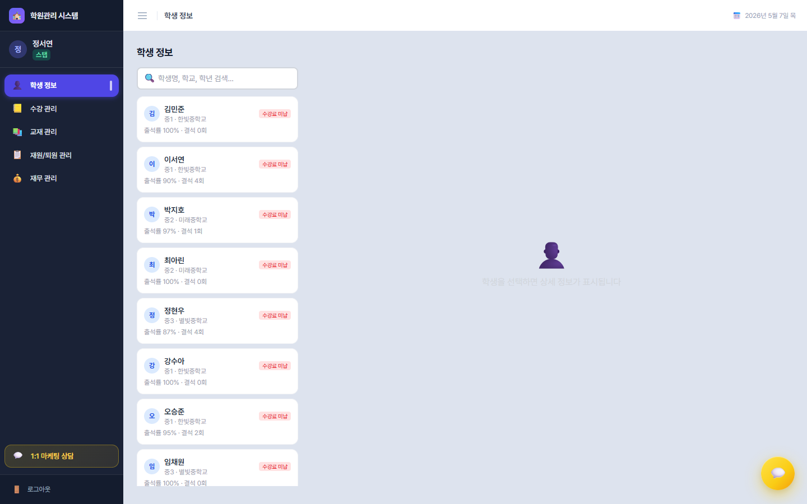
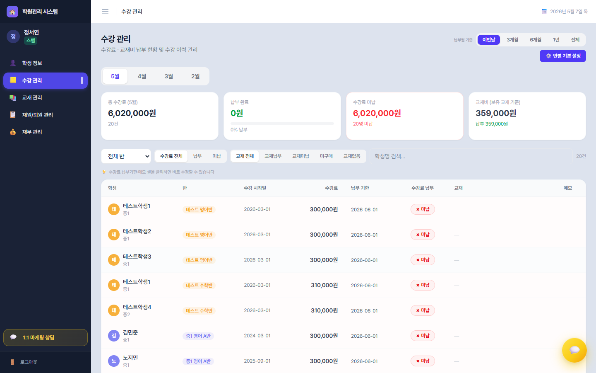
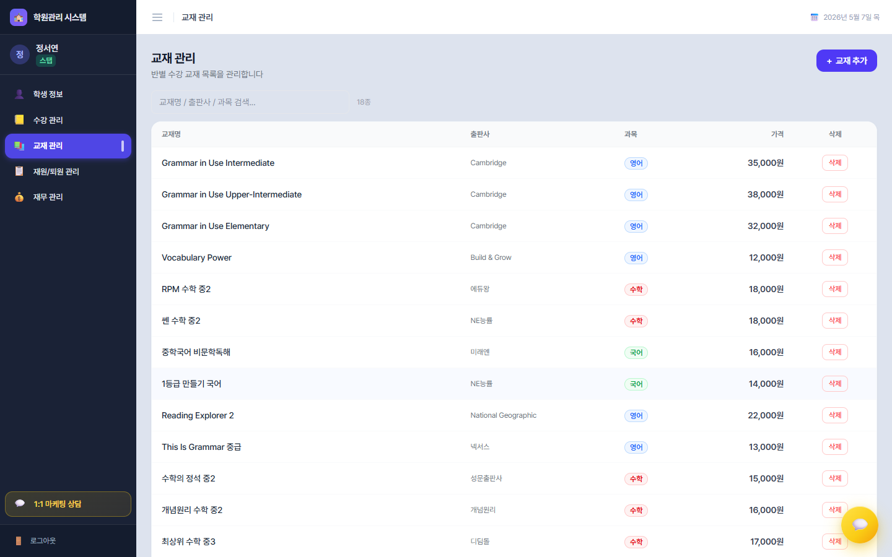
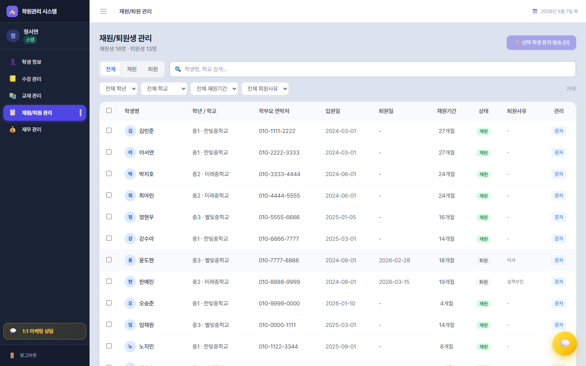
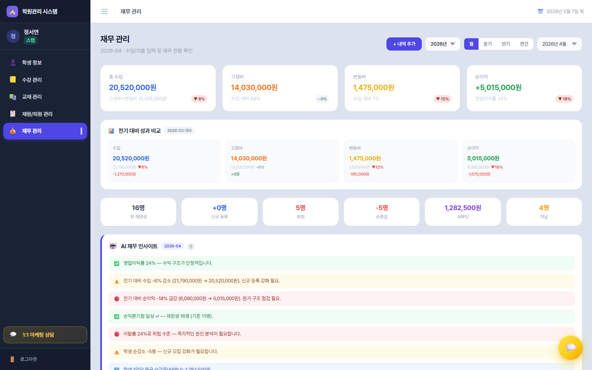

스탭(데스크) 완전 가이드
스탭은 학원의 사람과 돈을 동시에 다루는 역할입니다. 5개 메뉴를 메뉴 → 섹션·필터·테이블 단위로 모두 풀어 정리했습니다.
스탭 메뉴 구성
1. 학생 정보 👤

탭 없이 좌·우 2단 레이아웃. 좌측에서 학생을 고르면 우측에 4개의 섹션이 펼쳐집니다.
좌측 패널 — 학생 목록
- 🔍 통합 검색 (이름·학교·학년)
- 각 학생 카드: 아바타·이름·학년·학교·출석률(%)·결석 횟수
- 수강료 미납 / 교재비 미납 배지(조건부)
우측 섹션 ① — 기본 정보
- 학생 이름·학년·학교, 학부모 이름·연락처 배지, 입원일
- 수강료 납부 상태 + 수강 기간(MM/DD~MM/DD) 배지
- 미납 교재 목록 배지(교재명·금액)
- 관리 버튼:
- 🚪 퇴원 처리 (재원 시) ↔ ✅ 재원 처리(퇴원 시)
- 🔄 반 변경
퇴원 처리 폼 (인라인)
퇴원일 + 퇴원 사유 드롭다운 9종(타 학원 이동·이사·학업 부담·개인 사정·경제적 사정·시험 준비·학원 불만족·졸업·기타). "기타" 선택 시 직접 입력 필드.
반 변경 폼
현재 수강반 표시 + 전체 반 목록 체크박스 → 다중 선택 가능.
우측 섹션 ② — 출결 현황
- 기간 필터 4종: 📅 월 선택 / 최근 3개월 / 기간 선택(시작~종료) / 전체
- 4지표 격자 (출석 녹·결석 빨강·지각 노랑·조퇴 주황)
- 출석률 진행 바 (퍼센트) + 계산식 안내 "(출석+지각+조퇴) / 총 횟수"
우측 섹션 ③ — 수강 반 (타임라인)
학생이 거쳐온 모든 반을 시간순 박스로 표시. 진행 중 반은 인디고, 종료 반은 회색. 35일 이내 전환은 화살표(→)로 같은 체인 연결, 그 외는 별도 체인. 시작월~현재/종료월(YYYY.MM) + 수강 개월 수.
우측 섹션 ④ — 최근 테스트 결과
- 월 선택 우선 + 기간 버튼(1/3/6개월)
- 반 선택 토글 (전체 / 학생이 수강 중인 반)
- 테스트 종류 토글 4종 — 전체 / 단어 / 주간 / 월간 (인디고·스카이·에메랄드 색상 코드)
- 선 차트(점수 추이) + 점수 목록(80+ 초록·60~79 노랑·<60 빨강 + 진행 바)
2. 수강 관리 📒

섹션 ① — 헤더 우측 컨트롤
- 납부월 기준 기간 선택: 이번달 / 3개월 / 6개월 / 1년 / 전체
- ⚙️ 반별 기본 설정 토글 (펼치면 패널)
섹션 ② — 반별 기본 설정 패널
각 반에 대해:
- 월 수강료 (number) — "원/월"
- 📚 교재 목록 — 등록된 교재 행(이름·출판사·가격·✕ 제거) + "+교재 선택하여 추가..." 드롭다운(이미 등록된 교재 제외)
섹션 ③ — 통계 카드 4종
- 총 수강료 (파랑) — 금액 + 건수
- 납부 완료 (초록) — 진행 바 + 납부율
- 수강료 미납 (빨강) — 미납 인원 또는 "전원 납부 완료"
- 교재비 — 총액·납부·미납 분리, 미납 건수(주황)
섹션 ④ — 교재비 미납 배너 (있을 때만)
오렌지 배경. "📚 교재비 미납 N건 — 클릭하면 납부 처리". 미납 교재 칩들이 가로 스크롤 → 칩 클릭 즉시 납부 처리.
섹션 ⑤ — 필터 바
- 반 드롭다운 (전체 / 각 반)
- 수강료 토글 3종 (전체 / 납부 / 미납)
- 교재 토글 5종 (전체 / 교재납부 / 교재미납 / 미구매 / 교재없음)
- 학생명 검색 + 우측 "{N}건"
섹션 ⑥ — 메인 테이블 (8열)
- 학생 (이름·학년)
- 반
- 수강 시작일
- 수강료 — 클릭 인라인 편집
- 납부 기한 — 클릭 편집 + 납부일 소문자 표시
- 수강료 납부 — 체크 토글(초록·빨강)
- 교재 — 반별 설정된 교재마다 납부/미납 버튼 + 납부일
- 메모 — 클릭 편집
미납 행은 연한 빨강 배경, 호버 시 회색. 하단 합계 행에 총 수강료·납부·미납 합계.
3. 교재 관리 📚

섹션 ① — 추가/수정 폼
"+ 교재 추가" 버튼 클릭 시 4필드:
- 교재명 (필수, 빨강 별)
- 출판사
- 과목 드롭다운: 영어·수학·국어·과학·사회·기타
- 가격 (원)
섹션 ② — 검색 + 카운트
교재명·출판사·과목 통합 검색 + "{N}종" 표시.
섹션 ③ — 교재 테이블 (5열)
교재명 · 출판사 · 과목(과목별 색상 배지: 영어 파랑·수학 빨강·국어 초록·과학 보라·사회 노랑·기타 회색) · 가격 · 삭제. 행 클릭 시 편집 폼 자동 열림. 하단에 전체 종수와 총 금액 합계.
4. 재원/퇴원 관리 📋

섹션 ① — 헤더
"재원생 N명 · 퇴원생 N명" + 우측 📱 선택 학생 문자 발송 버튼(선택 인원 표시, 0이면 비활성).
섹션 ② — 상태 필터 + 검색
- 토글 3종: 전체 / 재원 / 퇴원
- 학생명·학교 통합 검색
섹션 ③ — 컬럼 필터 4개
- 학년 드롭다운 (전체 / 각 학년)
- 학교 드롭다운 (전체 / 각 학교)
- 재원기간 드롭다운: 전체 / 3개월 미만 / 3~6개월 / 6개월~1년 / 1년 이상
- 퇴원사유 드롭다운
- 필터 활성 시 "초기화" 버튼 표시
섹션 ④ — 메인 테이블 (체크박스 + 9열)
체크박스(헤더는 전체 선택) · 학생명(아바타) · 학년/학교 · 학부모 연락처 · 입원일 · 퇴원일 · 재원기간(N개월) · 상태 배지(재원 초록/퇴원 회색) · 퇴원사유 · 관리(개별 "문자" 버튼). 선택 행은 파란 배경(blue-50/30).
섹션 ⑤ — 문자 발송 모달
선택 N명 표시 → 학부모 연락처 목록(읽기 전용) → 메시지 textarea (5줄) → 취소/발송하기.
5. 재무 관리 💰

섹션 ① — 헤더 우측 컨트롤
- + 내역 추가 버튼 (모달)
- 연도 드롭다운 (2024~2027)
- 기간 유형 4종: 월 / 분기 / 반기 / 연간
- 상세 드롭다운 (월 선택 시 1~12월, 분기 시 Q1~Q4, 반기 시 상/하반기)
섹션 ② — 핵심 지표 4카드 (전기 대비 배지 포함)
총 수입(파랑) / 고정비(주황) / 변동비(노랑) / 순이익(초록·빨강 동적). 각 카드에 수입 대비 비율 + 영업이익률 + 전기 대비 ↑↓.
섹션 ③ — 전기 대비 성과 비교 (있을 때)
📊 4카드(수입·고정비·변동비·순이익)에 현기·전기 값 + 변화율.
섹션 ④ — 재원생 지표 6카드
현 재원생 / 신규 등록 / 퇴원 / 순증감 / ARPU / 미납.
섹션 ⑤ — 🤖 AI 재무 인사이트
- 인사이트 4가지 색상(🟢 양호 / 🟡 주의 / 🔴 위험 / ℹ️ 참고)
- ? 버튼 → 도출 근거 툴팁(수식 3개 + 현재 적용 기준 표 + "평가 기준 수정하기" 버튼)
- 담당자 총평 textarea (✏️ 편집 → 저장/취소)
섹션 ⑥ — 🎯 수익 개선 시나리오 3카드
① 학생 5명 추가 / ② 변동비 10% 절감 / ③ 수강료 5% 인상 — 각 카드에 현재 순이익 vs 개선 후, 증가분 강조.
섹션 ⑦ — 차트 2개
- 월별 수입/지출 (막대 3종)
- 월별 순이익 추이 (라인)
섹션 ⑧ — 수익성 분석 3카드
- 손익분기점 — 고정비·ARPU·BEP 학생 수·진행 바·비용 구조 적층 막대
- 선생님 효율 — 강사별 담당반·학생·수강료 기여 + 진행 바
- 반별 정원 — 8명+(초록) / 5~7명(주황) / <5명(빨강)
섹션 ⑨ — 마케팅 채널별 효율 테이블
채널 · 상담수 · 등록수 · 전환율(50%+ 초록·30~50% 노랑·<30% 빨강) · 효율 평가(집중 투자/유지/개선).
섹션 ⑩ — 상세 내역 3섹션 (수입·고정비·변동비)
각 섹션 헤더에 합계·건수·"클릭하여 편집". 행 클릭 → 인라인 편집(2×2 그리드: 날짜·항목·금액·설명 + 삭제·취소·저장).
섹션 ⑪ — 인사이트 평가 기준 수정 모달
영업이익률 · 고정비 비율 · 이탈률 각각의 양호/주의/위험 임계값을 직접 조정 → 저장.
섹션 ⑫ — 내역 추가 모달
유형(수입/고정비/변동비) → 항목(유형별 카테고리) → 금액·날짜·설명 → 저장.
매일 / 매주 / 매월 루틴
매일 (15분)
- 학생 정보 — 학부모 응대용 30초 준비
- 재무 관리 — 입금 처리, 지출 입력
- 재원/퇴원 — 신규 상담 입력
매주 월요일 (30분)
- 수강 관리 — 미납자 SMS 발송
- 재원/퇴원 — 신규 등록자 환영 메시지
매월 1·5·10·25일
- 1일: 청구서 발송
- 5일: 미납 알림
- 10일: 미납 직접 통화
- 25일: 다음달 등록 안내